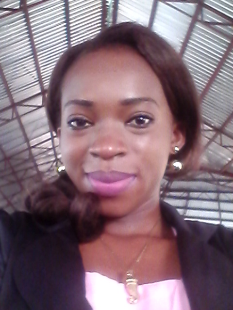

Hi, I am
Chiamaka Osumgba Kindness
A Software Developer
Osumgba Chiamaka
Meet Kindness, a Favcoder


My mission for Favcode is to: Be a world class developer, initiate and complete innovative projects, and have a voice in the technology ecosystem.
Anyway, this is the “About” page, so I should probably tell you my story.
<\Insert Flashback Sequence>
In my younger days, I was on the track towards medical school(Medcine and Surgery), but was detoured on the way by the quest for Admission. As years passed I settled for an alternative course (Computer Science), then did I realized humanity can be helped or even saved through software development.
She Fell in Love
I found the love of my life few months before Industrial Training, a friend of mine one afternoon came to my room so excited, she wanted to demonstrate something to me but I was watching movie(that’s what majority of students do with their PC, I was no different). Her excitement was overwhelming that I gave her an opportunity. Guess what! she wrote some foreign characters, opened my browser and boom!!! the miracle happened; Google written bodily with its 4 different colours appeared on the screen, immediately I fell in love. My love grew into passion that I gave up my little savings to learn web development using java for back end. The journey have not been easy but I have this inner peace that am doing what I love the most.
This is why you should choose me
Chiamaka is a strong innovative individual having unwavering passion for software development in general, solving real life problems through software development, thus contributing to economic growth.
Having completed my education, my dream is to be a world class developer, initiate and complete innovative projects, and have a voice in the technology ecosystem. Lack of funds has always been a limiting factor to my growth. As a female, getting a mentor who will see my vision, invest in me and see me grow, has also been challenging.
It’ll be dreams come true for me, if I’m chosen among those that will be trained as web developers, as this will give me an opportunity to work closely with a passion driven company, learn diverse technologies, develop industry needed skills, and grow my network; most importantly land an amazing internship or job opportunity. I am teachable, can relate well with people and can work for hours, but I know more is needed. Being a fast learner, passionate about programming, determined to be successful, I know I am fit for the offer.